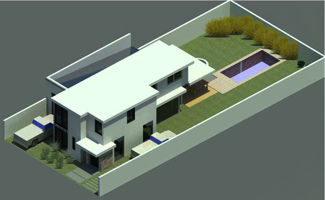

Nuestra historia: volviendo realidad tus sueños
En GJ Constructora, llevamos más de tres décadas dedicadas a transformar ideas en hogares. Nuestra misión es construir espacios que se adapten a la vida de las familias.
Comenzamos en 1992 y desde entonces, hemos realizado múltiples proyectos y ejecuciones de obras. Contamos con amplia experiencia en la creación de hogares, ya sean en material de piedra y tronco, ladrillo a la vista o con un aspecto minimalista. También hemos realizado multiples obras hospitalarias públicas, como salas, hospitales e instalaciones de aparatos de precisión.

Nuestros Valores
Calidad: Usamos materiales de calidad para garantizar la durabilidad y la excelencia en cada proyecto.
Transparencia: Mantenemos una comunicación abierta y honesta con nuestros clientes en todo momento en la compra de nuestros inmuebles.
Compromiso: Nos comprometemos con la conformidad de nuestros clientes, garantizando su satisfacción durante el proceso.
Innovación y Precisión Constructiva: Antes de iniciar una obra, creamos un "gemelo digital" 3D de cada uno de nuestros proyectos. Esto nos permite detectar y solucionar cualquier imperfección en la fase virtual, garantizando que la vivienda que compras esté construida con la máxima precisión y calidad, libre de los errores comunes de una construcción tradicional.
Calidad Integral Garantizada: Al controlar cada etapa del proyecto, desde el primer plano hasta el último acabado, aseguramos una calidad y coherencia que no es posible cuando intervienen múltiples empresas. Al concretar la compra de una de nuestras propiedades, estás adquiriendo un producto concebido y ejecutado con una única visión de excelencia.
